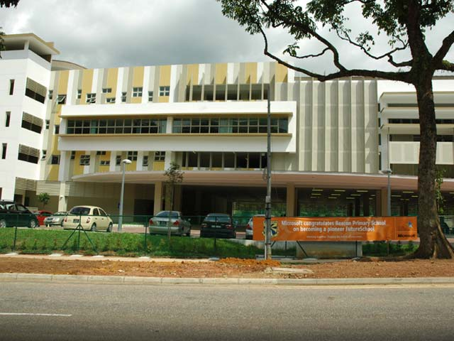
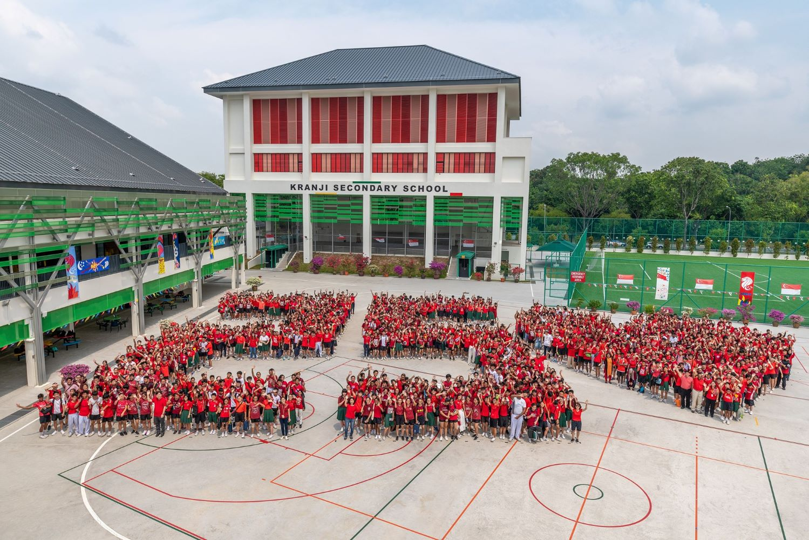

I am a Game Dev student, hailing from Singapore and currently studying in Nanyang Polytechnic, Diploma for Game Development and Technology as of 2023.
Growing up with electronics, I've grown a passion to tinker aroune with them and ultimately ended up learning how to code and have not stopped learning since.
Other than coding, I do find myself doing other activities such as:
Other than activites, my other interests are here as well:
For my primary education, I studied at Beacon Primary School from 2012 to 2017.
I went to Kranji Secondary School as my Secondary School from 2018 to 2021

During my primary school days, I had the opportunity to try out coding in Scratch and even a bit of python. I even went for a small coding competition across primary schools.
However, during secondary school, I was too bombarded with academics to pursue coding as a hobby, I set it aside often whenever I tried getting back into it.
Coding was not originally my idea in mind in the future, but my diploma reignited the passion I had for coding when I was young.
Thanks to the friends that I have made, they helped me find my passion back into coding. It is always nice to work with friends on big projects.